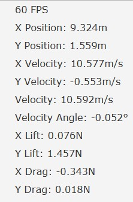

The Computational Physics course at the North Carolina School of Science and Math (NCSSM) is a collaboration between the physics and computer science departments. While taking the course I modeled various physics problems in mechanics, electricity and magnetism, and quantum mechanics. For the final project, I was tasked with expanding a previous project or concept of my choice, with approval from the instructor. I chose to expand a previous project where I modeled simple frisbee flight.
Overview
Building on previous code (discussed below), this project is visually simulates the un-powered flight of an aerodynamic object with tunable aerodynamic parameters.
Toolbar
The simulation is controlled from the toolbar by adjusting various parameters pertaining to launch conditions and object properties.
Projectile launch parameters in toolbar
Aerodynamic tuning controls and object preset selection in toolbar
Simulation controls in toolbar including (from left to right) step-backward, play, pause, step-froward, reset, and scale adjustment
Information Bar
The information displays data that can be valuable in tuning an object, especially when used in conjunction with experimental data. This data can also be used to evaluate the performance of the simulation.
Results
The final simulation is fully functional and can be used to estimate values such as the coefficients of lift and drag as well as zero-lift angles of attack. Below is a graph showing a tuned frisbee simulation along side data collected from the actual flight of a frisbee.
The limitations of this simulation are that it can be difficult to tune more than a few parameters. Furthermore, even after tuning, the model does not take into account the spin of and object like a frisbee.
Having gained a greater understanding of how lift and drag can be can be calculated and applied to an object from my coursework in aerospace engineering, there are a few changes I would make to the physics of the simulation were I to develop in further:
- Set the change in coefficient of lift per degree angle of attack to an accepted approximation of 0.11 1/degrees to eliminate a parameter
- Calculate the coefficient of drag as a function of coefficient of lift rather than one of angle of attack to reduce parameters
- Calculate the drag force using a formula that better applies to this use-case
- Implement a system that rotates the object as it glides to ensure accurate angles of attack (the current implementation has the object with a small constant pitch angle above horizontal)
Pre-existing Code
Through previous projects, there was an abundance of experience and code to build off of, with my instructor's approval.
Projectile Motion Visual Simulation
In a previous course at NCSSM called Procedural and Object Oriented Programming, I built a simple projectile motion simulation in JavaFX. This program had several features:
- Euler's Method based projectile motion simulation with GUI using 'delta time' in JavaFX animation engine
- Pause, play, step-forward, step-backward, and reset simulation control buttons
- Launch velocity input control
- Visual scale adjustment control
Frisbee Modeling
For the first project in Computational Physics, with a partner, I modeled the flight of a frisbee by adding lift and drag forces to the Euler's Method models previously practiced in class. I made sure to include several factors in the model:
- Coefficient of lift as a function of angle of attack
- Coefficient of drag as a function of angle of attack
- All calculations of forces, accelerations, velocities, positions, performed using vectors
Trajectory simulated by Python code
Trajectory plotted from frisbee video analysis